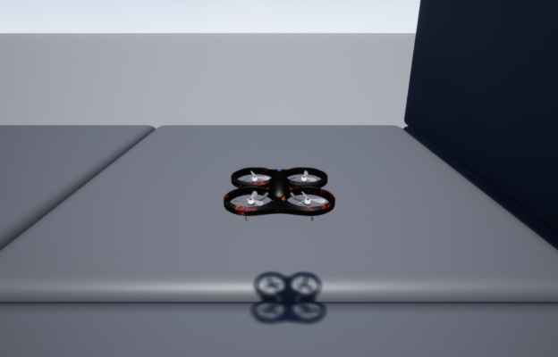

Project AirSim¶
Welcome to Project AirSim¶
Project AirSim is a simulation platform for drones, robots, and other autonomous systems.
Building on the previous work of AirSim, it leverages Unreal Engine 5 to provide photo-realistic visuals, while providing the simulation framework needed to integrate custom physics, controllers, actuators, and sensors to develop an autonomous system.
Project AirSim consists of three main layers:
Project AirSim Sim Libs - Base infrastructure for defining a generic robot structure and simulation scene tick loop
Project AirSim Plugin - Host package (currently an Unreal Plugin) that builds on the sim libs to connect external components (controller, physics, rendering) at runtime that are specific to each configured robot-type scenario (ex. quadrotor drones)
Project AirSim Client Library - End-user library to enable API calls to interact with the robot and simulation over a network connection
For more details on the architecture, see Project AirSim Architecture Overview.
Project AirSim currently supports Windows 11 and Ubuntu 22. For more info about hardware specs for working with Project AirSim, see System Specifications.

Open Source Commitment¶
We believe that open-source is the best way to foster innovation and collaboration in robotics simulation. Project AirSim can only thrive if it’s built together — not by a single corporation, but by all of us.
We invite you to become part of this journey: contribute code, share feedback, report issues, and help shape the future of the platform.
Enterprise Support¶
IAMAI Simulations offers professional Enterprise Support for teams and organizations building on Project AirSim.
Whether you’re working on large-scale simulations, custom features, or integration into your existing stack, we can help you move faster and with confidence.
To learn more, visit iamaisim.com.
Support the Project¶
Running and maintaining a project of this size has significant infrastructure and development costs. We are not Microsoft — we are a focused, passionate team. If you or your organization is benefiting from Project AirSim, please consider becoming a sponsor.
Your support helps us:
Host and distribute binary releases
Improve developer documentation and onboarding
Offer community support and mentorship
Push the platform forward with new features
To become a sponsor or partner, tap on the Sponsor button
Join the Community¶
We believe that collaboration is key to building a thriving ecosystem around Project AirSim. Join our growing community to share ideas, ask questions, and collaborate with other developers and enthusiasts:
Discord: Connect with us on our official Discord server for real-time discussions, support, and updates. Join here.
GitHub Discussions: Participate in discussions, share feedback, and contribute to shaping the future of Project AirSim. Start a discussion.
We look forward to hearing from you and building the future of autonomous systems together!
What’s New¶
For a complete list of changes, view our Changelog.
Roadmap and Collaboration¶
Our project’s roadmap and future direction are defined through GitHub issues and discussions. Issues or discussions labeled roadmap or need help outline planned features and areas where community contributions are encouraged. We invite you to participate and help shape the future of Project AirSim.
Getting Started¶
See Installing system prerequisites for information about Windows/Linux system setup needed before running Project AirSim.
1. Pre-built environment binaries¶
I just want to download and run a Project AirSim environment and drive it with some Python code.
Note: You can either build Project AirSim from source or download pre-built binaries to use with the Python client. Currently, only the classic Blocks environment is available. If you require another environment (e.g., urban, geo-specific, etc.), you can sponsor its maintenance by contacting envs@iamaisim.com.
Use pre-built binary environments¶
2. Develop with Project AirSim source¶
I’m going to build the sim libs, Plugin, Blocks, and my own UE project environment from the ground up so I can customize it to my application.
Build from source as a developer¶
Running Headless (Docker)¶
If you need to run a Project AirSim simulation on a headless system, such as in a Docker container, you can enable off-screen rendering by adding the -RenderOffScreen argument when launching the Unreal environment executable:
Blocks{.exe/.sh} -RenderOffScreen
If you are running without GPU access and want to run without any image rendering, you can disable rendering completely by adding the -nullrhi argument:
Blocks{.exe/.sh} -nullrhi
These arguments can also be used while debugging in VS Code by modifying the launch.json file, or in Visual Studio 2022 by modifying the project’s Configuration Properties. See Running Headless (Docker, Azure Cloud) for more details.
Reference¶
Configuration JSONC Settings¶
Client API¶
Controllers¶
Sensors¶
Scene¶
Coordinate System
Physics¶
FAQ¶
If you run into problems, check the FAQ for help.
Transitioning from AirSim¶
See Transitioning from AirSim for guidance on converting an AirSim Unreal environment and client code from AirSim to Project AirSim.
License¶
Please see the License page for Project AirSim license information.
Copyright (C) Microsoft Corporation.
Copyright (C) IAMAI Consulting Corporation.
MIT License
Sensors
- Supported imaging/capture camera customizations
- Sample config
- Camera Images Post processing using Neural Network models
- Image post processing settings
- Post processing model settings
- Camera Streaming
- Segmentation
- Lidar sensor
- Lidar sensor settings
- Radar sensor overview
- Radar sensor settings
- Battery sensor
- Battery sensor settings
Physics and Simulation
Controllers
- Flight Controllers
- Simple Flight Controller for Drones
- PX4 Autopilot Flight Controller
- Building PX4
- Using a PX4 Controller as Hardware-In-The-Loop (HITL)
- PX4 Lockstep Mode
- PX4 with Multiple Robots
- Using a PX4 Controller as Software-In-The-Loop (SITL)
- Supported airframes
- Setting up PX4 Software-In-The-Loop
- The first flight session
- Setting the GPS origin
- Smooth offboard transitions
- Check the home position
- No remote control
- Using PX4 Mavlink based Gimbal
- Ending a flight session
- Starting a new flight session
- Remote controller
- Advanced PX4 SITL configurations
- PX4 Software-in-the-Loop with WSL 2
Settings